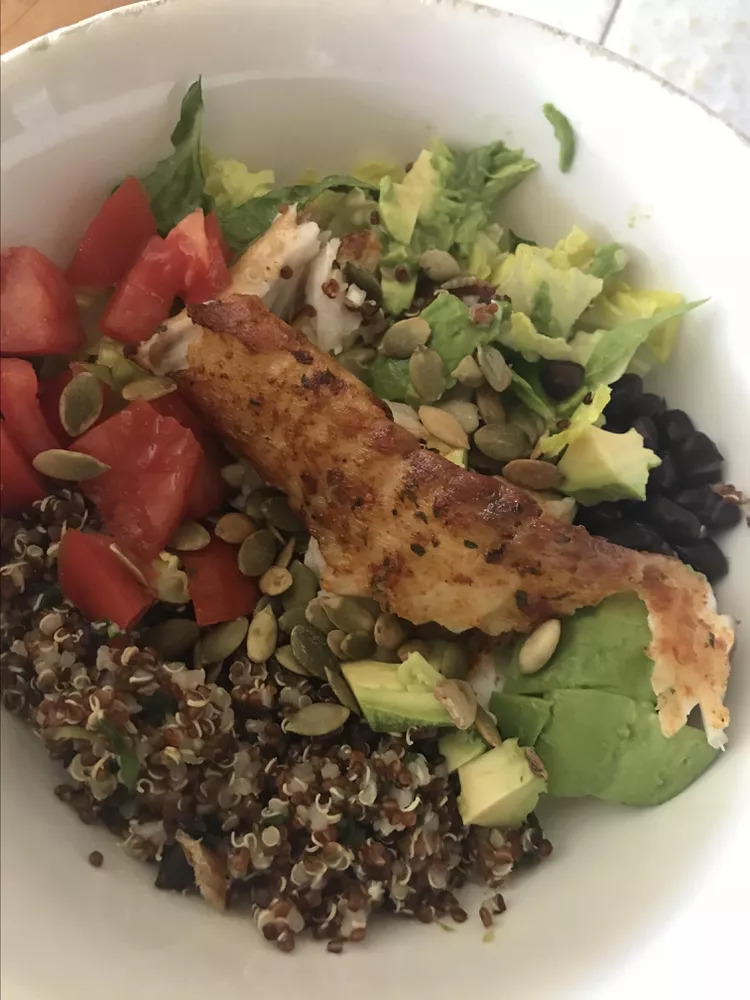

Home
Cilantro Lime Quinoa Bowl with Blackend Tilapia

Description
This is my take on the cilantro lime quinoa bowl from everyone's favorite Mexican-inspired coastal fast food chain. It turned out pretty good. You can season the tilapia or buy the pre-seasoned ones at the market. If you have an Aldi grocery nearby, they have fresh tilapia seasoned with a Southwest rub, which is perfect for this recipe.
Ingredients
Blackened Tilapia
- 1 ½ tablespoons paprika
- ½ tablespoon onion powder
- ½ teaspoon salt
- ½ teaspoon ground black pepper
- ½ teaspoon cayenne pepper
- ½ teaspoon dried oregano
- ¼ teaspoon garlic powder
- 2 tilapia fillets
- 1 tablespoon vegetable oil, or more as needed
Cilantro Lime Quinoa
- 1 cup water
- ½ cup quinoa
- ⅛ teaspoon salt
- 1 large lime, zested and juiced
- ½ cup chopped fresh cilantro
- salt to taste
Salad Bowl
- 2 cups chopped romaine lettuce, or to taste
- 1 cup fresh spinach leaves, or to taste
- 1 (15 ounce) can black beans, rinsed and drained
- 1 Roma tomato, chopped
- 1 avocado, chopped
- 2 tablespoons roasted pepitas, or to taste
- 2 wedges lime
Steps
- Make tilapia: Combine paprika, onion powder, salt, black pepper, cayenne pepper, oregano, and garlic powder in a small bowl. Rub about 1 tablespoon spice mixture on each side of both tilapia fillets, making sure to use up seasoning. Let fillets sit while preparing quinoa, about 15 minutes.
- Make quinoa: Combine water, quinoa, and salt in a medium saucepan. Bring to a boil; cover and reduce heat to low. Cook until quinoa absorbs all the liquid, 12 to 15 minutes. Remove from heat. Stir in lime zest, juice, and cilantro. Season with salt and set aside.
- Heat olive oil in a large pan over medium-high heat. Cook tilapia fillets in hot oil until fish flakes easily with a fork, 2 to 3 minutes per side.
- Make bowl: Arrange romaine lettuce and spinach in 2 bowls. Divide tilapia, cooked quinoa, black beans, and tomato over lettuce and spinach. Top with avocado and pepitas. Serve each portion with a lime wedge.